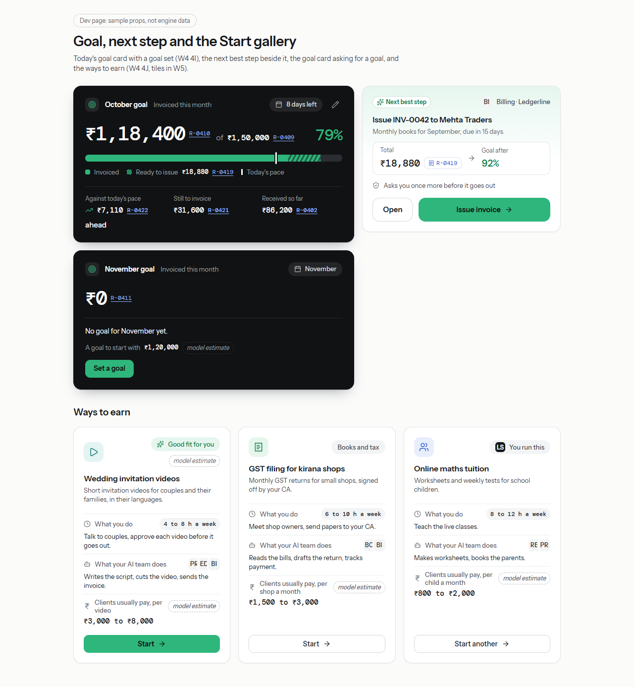
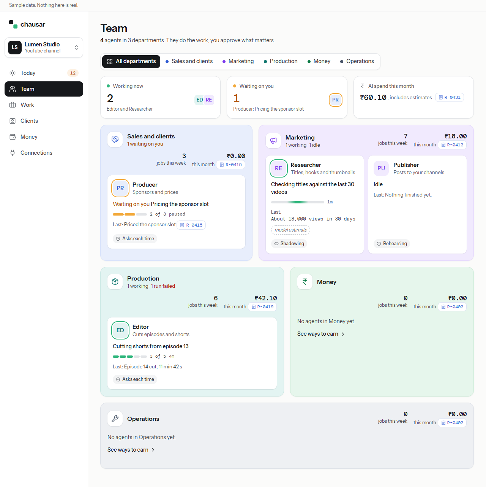
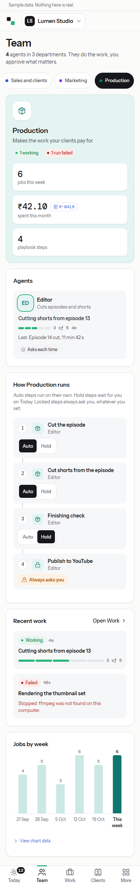
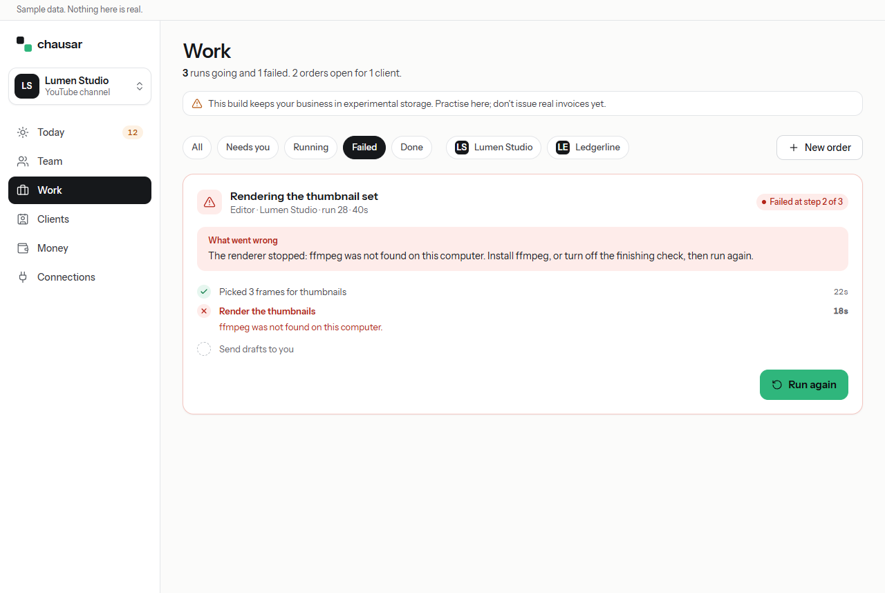
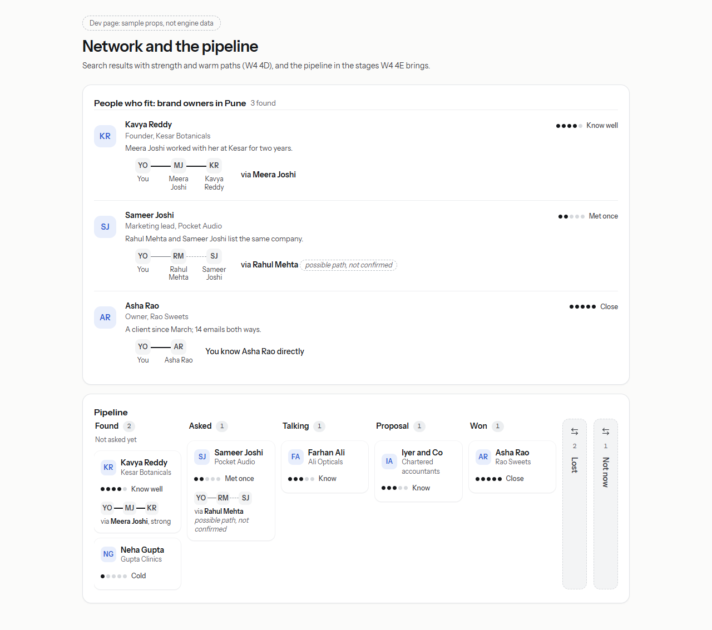
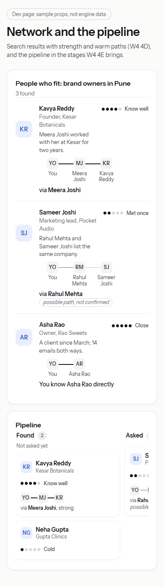
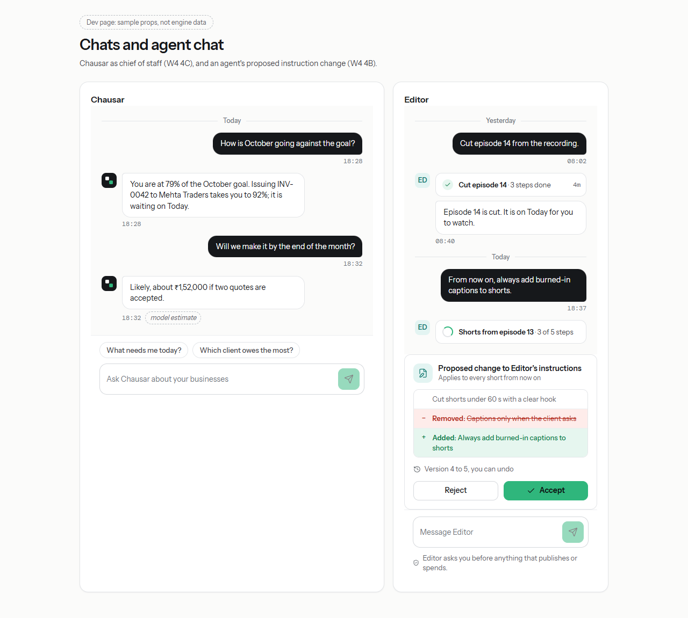
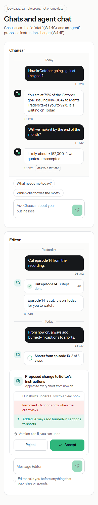
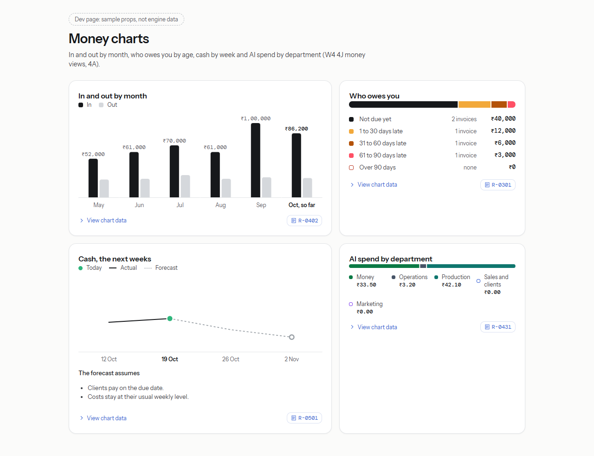

Direction D beside the app
Each direction D board on the left, the app on the right, as wave 3 left it: the fake engine of npm run dev:ui, 1280 wide, light theme (the phone boards at 390). Boards are cut at 1100 px tall; the app shots hold the whole page, so scroll inside a frame to see the rest. Where the app shows less than the board, the board drew data the engine does not send yet; each section says what waits for wave 4.
Today
#/todayMatches
- Rail with the two-square logo, the business switcher and the amber Today count; Jade only on primaries, rings, bars and the logo.
- Header: date eyebrow, greeting, sub line with the count in bold.
- The dark goal card, with what was invoiced and received this month, each with its receipt.
- Team at work: stories with rings and state words, live tiles with progress rings, the current step and "Answer below".
- Needs you: wait-count chip, filter chips by kind and by business, six big preview cards, four compact cards, "Show 2 more"; one filled primary per card, Approve locked until watched, the second ask inside the card.
- Working now and Earlier as list rows with avatars, step bars and receipts.
Differs, and why
- No goal bar, percent, pace or days left, and no Next best step beside the goal card: the engine has no goals yet, so the card shows the real invoiced figure. With goal data the card and the next step draw as on the board (parts page, second shot).
- No Ask Chausar box, bell or account button, no Chats in the rail, no name in the greeting.
- Stories have no department tint or badge, no Chausar story and no Add agent; the fake engine has 4 agents, D drew 8.
- Previews come only from what the engine sends: a card with none is simply shorter than its neighbour, and the sign-off paper shows only its two title lines.
- Amounts keep the engine's format ("₹1,12,400.00") where D drew whole rupees; type never goes below 12 px and nothing loops (plan choices).
Waits for wave 4
- 4I goal, pace, days left, ready to issue, next best step
- 4A departments on agents
- 4C Chausar story, Ask box, Chats
- 4G bell
- 4J queue previews and approvals meta
- 4F Stop on running rows
- 4J owner name




Today on a phone
#/today at 390Matches
- Top bar with the logo and the business button; bottom tabs Today (count badge), Team, Work, Clients, More.
- The dark goal card, stories and live tiles in sideways rows, filter chips in a sideways row.
- The swipe tip with Hide; every card swipes, right through the card's own primary (the second ask holds), buttons xl.
Differs, and why
- No bell or account button, and no Next best step with Issue invoice inside the goal card (no goals yet).
- Clients holds the second tab until Chats exists.
Waits for wave 4
- 4C Chats tab
- 4G bell
- 4I goal and next step
- 4A departments

Team
#/teamMatches
- Stat tiles: Working now with an avatar stack, Waiting on you in amber, AI spend with its receipt.
- Agent cards with ring, role, now line, step bar ("3 of 5 · 4m"), posture chip, last result with its receipt or "model estimate"; idle agents fold past eight.
- With department data (dev page, second shot) the toggle and the five tinted department panels draw as on the board.
Differs, and why
- The engine sends no departments yet, so one "Your agents" tile replaces the tinted panels and there is no toggle.
- No Done this week tile, Add an agent, Chat buttons or jobs chart.
- The engine writes the spend as one string, "₹60.10, includes estimates": the amount is the mono figure and the words sit beside it in the body face, where D drew "plus ₹18.00 held" on its own line.
Waits for wave 4
- 4A departments, summaries, toggle, Done this week, jobs chart, Add an agent, Keeper, held spend
- 4B Chat button and tab, instructions version, standing orders




Team on a phone
#/team at 390Matches
- Stat tiles and full-width agent cards with rings, bars and posture chips.
Differs, and why
- Stat tiles stack one per row, where D has two by two: a long rupee figure must never share a row on a phone (3B1b rule).
- No department chips row and no Chat buttons (no departments or agent chat yet).
Waits for wave 4
- 4A departments
- 4B agent chat

One department
parts.html?app=departments#/team?dept=prod (dev page)Matches
- The toggle with Production chosen; the hero panel on the Production tint with icon, purpose, counts as chips, jobs this week, spend with its receipt and playbook steps.
- "How Production runs": numbered steps with Auto and Hold, the floor step "Always asks you".
- Recent work cards and jobs by week in the department's colours.
Differs, and why
- Drawn only on the dev page, with W4 4A1's department views laid over the fake team, until the engine sends departments.
- Steps show the agent's name, not D's per-step icons and descriptions (the engine's steps carry none).
- No live run checklist with frames, no Edit steps, no version note, no thumbnails in recent work, jobs only (no spend series), no Add an agent.
Waits for wave 4
- 4A departments and their series
- 4B instruction versions
- 4J previews



The agent panel
#/team?sheet=agent:editorMatches
- The 440 px panel beside the page; its head with avatar, name, role, state in words ("Working, 3 of 5") and Close.
- Tabs; Steps holds the posture as radio cards with what each means, and Auto or Hold per step; Runs lists the agent's runs.
Differs, and why
- No Chat tab, thread or composer, and no Instructions tab (the chat parts are on the Chats parts page).
- No department chip in the head; the open agent's card is not outlined on the page.
Waits for wave 4
- 4B threads, notes, standing orders, instruction versions
- 4A department


Work
#/workMatches
- Filter chips with business chips; Running now tiles with avatar, business, ring, purpose, current step and "Run 31 · 4m"; the waiting tile in amber with the run's question and Answer.
- The failed tile: "Failed at step 2 of 3", What went wrong in the engine's words, the steps, Run again.
- Finished with receipts or "model estimate"; Orders by client with what they owe, status chips, Open on Today, Mark delivered.
Differs, and why
- "Failed", not D's "Stopped": Stopped is kept for the owner's own Stop (W4 4F).
- No Stop on running tiles, no How to fix it, no "Run again keeps step 1"; no frames, A and B thumbnails or tool icons, so the tiles are blank in the middle.
- No stage tracker on orders, and an order says "Priced on receipt" with its receipt where D drew the old and new price (the engine sends the receipt only).
Waits for wave 4
- 4F run controls and breaker words
- 4J order steps
- 4J queue previews




Clients, pipeline
#/clients/pipelineMatches
- Tabs as links with counts; Add a lead; the board with a column per lead stage, counts and hints; lead cards with initials, company, the email check line and the draft state.
Differs, and why
- Today's lead stages (New, Drafted, Contacted, Replied, Won; Lost and Blocked folded) instead of D's Found to Not now; the fake engine's two leads leave most columns empty.
- No stat tiles, filter chips, strength dots, path lines or follow-up dates; no Network tab or Import contacts. The W4 stages, strength and paths are on the parts page (second shot).
Waits for wave 4
- 4E pipeline stages, follow-ups, drafts and handoffs, stat tiles
- 4D Network tab, strength, warm paths




Network
parts.html?show=network (dev page, sample props)Matches
- Results with avatar, strength dots and words, the quoted reason, and the path line with a dashed "possible path, not confirmed".
- The board in Found, Asked, Talking, Proposal, Won, with Lost and Not now folded.
Differs, and why
- No place yet: the Network tab, the search box, the intro request panel and "Where your network comes from" wait for W4.
- The results are plain rows, not D's cards with their actions (Open in LinkedIn, WhatsApp, Draft intro).
Waits for wave 4
- 4D import, search, strength, warm paths
- 4E drafts and handoffs


Chats
parts.html?show=chats (dev page, sample props)Matches
- The thread: day lines, the owner's bubbles in ink, folded run rows with ticks, "model estimate" on a model-written figure, the composer with suggestions.
- The proposed instruction change: Removed and Added in words, "Version 4 to 5, you can undo", Accept as the one primary.
Differs, and why
- No Chats place, conversation list or pinned threads, and no plan card or receipted figures inside the chief's answer.
Waits for wave 4
- 4C chief of staff and the Chats place
- 4B agent threads



Money
#/moneyMatches
- Sub-pages as a segmented nav; Invoiced this month, Received and AI spend tiles, each with its receipt.
- Owed to you with its open invoices oldest first; Due to you next by date; invoices as a table with status chips.
Differs, and why
- No goal bar on Invoiced; no aging bar, in and out chart, 13-week cash line or next three weeks: the engine sends none of those series yet (the charts are on the parts page, second shot), so two thirds of the board has no counterpart.
- No business chips, month picker or Export for your CA; AI spend has no department split.
Waits for wave 4
- 4I goal
- 4J money views (aging, months, cash, costs, lateness, export)
- 4A spend by department
- 4E reminder drafts




Start
#/onboardingMatches
- "Start a new business" eyebrow; How starting works in three numbered steps; the one-sentence box with its hint, Make my plan as the one primary and three examples that fill the box; Resume setup with its bar.
Differs, and why
- The title is "Describe your business" and there is no gallery: the engine lists no ways to earn yet (the gallery tiles are on the parts page).
- How starting works uses icons and words, not D's miniature cards with made-up counts (a plan choice); no Good fit for you tile.
- The country line reads "Based in United States", the fake engine's default.
Waits for wave 4
- 4J ways to earn (tiles in W5)
- 4C Good fit for you, Ask Chausar
- 4J business picker and file drop


What the walk fixed, and what it lists
Fixed
- Receipt sheets (receipt, ca-receipt) mark their root data-receipt-sheet through <Sheet receipt>, and the Ink rules helper lets money text sit there: the sheet is the proof (tests/shell/receipt-sheet.test.tsx).
- Hindi step counts ("5 में से 3") are set in the body face: a :lang(hi) [data-count] rule in base.css, and the count labels in StoriesRow, ProgressBar and JobList are now marked as Counts so it reaches them (tests/hindi-counts.test.tsx; the walk checks the computed face in Chrome).
- On a phone the live tiles on Today scroll sideways and can hold no button; their row now takes focus and is named (axe scrollable-region-focusable, serious; tests/walk-findings.test.tsx).
- Money > Invoices with a sheet open at 1280: the table's visually hidden words escaped its scrolling tile and let the whole place scroll sideways; the tile is now positioned (tests/walk-findings.test.tsx).
- On a phone a sheet that covers the screen is now a modal dialog named by its title (the page behind it is inert), so the page always has a main landmark or a dialog with its heading; beside the page on a wide screen it stays a plain side panel.
- The business menu is a labelled, non-modal dialog, and its button says so (aria-haspopup); it needs no landmark around it.
- Lock notes name a one-word action as D does ("Approve unlocks after you watch it") and leave a longer one to the button beside it ("Unlocks after you read it"), so every card keeps to 12 words of its own; the test exceptions are gone.
- Money > Invoices: the table turns into stacked rows whenever its tile is under 840 px (a phone, or a sheet open beside the page at 1280), so Action stays in view and nothing scrolls sideways.
- Needs you: each card takes its own height, so a card with no preview no longer stretches to its neighbour with blank space.
- A figure the engine writes with words after the amount ("₹60.10, includes estimates") keeps the amount as the mono figure and sets the words in the body face, on Team and on Money; words that hold a second amount are never split off, and the Ink rules fail any that do.
- Work: an order says "Priced on receipt" with its receipt, never a bare "Price" with no amount.
- Phone tabs: Today's count badge sits on the icon's top right corner, so the sun stays readable.
- Each is held by tests/walk-findings.test.tsx or tests/budgets.test.tsx; the tests that found the business menu as a group now find it as a dialog.
- Team: the avatar stack overlaps lightly, so each initial reads ("ED", not D's clipped "EI").
Listed for you or wave 4
- Today: the sign-off paper preview shows two title lines in its fixed-height paper (the engine's view sends no more until W4 4J queue previews).
- Hindi: words the engine writes stay English (Today's summary, row lines, action labels such as Read, Accept, Approve and Run again, the spend line), because the fake engine writes English; dates in mono ("21 अक्टू॰") read wide; every Hindi string is machine-drafted and waits for a native reviewer.
- Connections: a connector with one mode that writes and one planned shows both labels on one card (LinkedIn: browser posting writes, API posting is planned); the card could say which mode each label is for.
- Engine and fixture words: Today's "Thumbnail set stopped" and a run's "Stopped: ffmpeg ..." beside a Failed chip (W4 4F words); Bookkeeper is "BO" and Ledgerline "LE" by the initials rule, where D drew "BK" and "LL".
- Dark theme: the locked primary (mute on accent soft, 5.2:1) reads quiet by design; the goal card is lifted to #1f2124 with a border (plan choice) so it does not vanish into the page, which makes it read softer than D's black card.
The full table, the checks and the word baselines are in WALK.md beside this page.